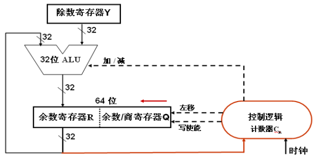
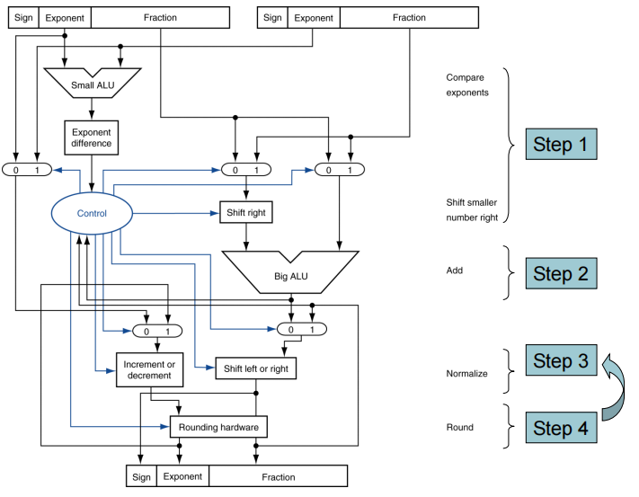

计算机的算数运算
约 3396 个字 21 张图片 预计阅读时间 23 分钟
3.1 介绍
整数上的运算
- 加法和减法
- 乘法和除法
- 溢出处理
浮点数
- 浮点数的表示和运算
3.2 加法和减法
加法
和十进制的加法类似，从低位开始相加，同一位上的数字相加，溢出后进行进位
溢出
- 正数与负数相加时不会出现溢出情况
- 两个正数相加，如果结果的最高位为0，说明没有溢出；如果最高位为1，说明溢出了（正数相加得到了负数）
- 两个负数相加，如果结果的最高位为1，说明没有溢出；如果最高位为0，说明溢出了（负数相加得到了正数）
减法
减去一个数，相当于加上这个数的相反数。也就是说，先将减法转化成加法，在进行运算
溢出
- 正数减去一个负数，如果最高位为1，表示溢出
- 负数减去一个正数，如果最高位为0，表示溢出
加法器
全加器
串行进位加法器
先行进位加法器 CLA
使用原因：串行进位加法器采用串行逐级传递进位，电路延迟与位数成正比关系。因此，现代计算机采用一种先行进位(Carry Lookahead)方式
定义辅助函数：\(\(G_i=A_iB_i\)\) —— 进位生成函数，\(\(P_i=A_i+B_i\)\) —— 进位传递函数
全加逻辑方程：\(\(F_i=A_i\oplus B_i\oplus C_i\quad C_{i+1}=G_i+P_iC_i\quad (i=0,1,...n)\)\)
4位CLU
4位全先行进位加法器CLA
一共1+2+3=6级门延迟。其中的1是一开始计算的\(G_i\)与\(P_i\)，需要一个门延迟；中间的2是\(C_1\)、\(C_2\)、\(C_3\)、\(C_4\)的计算，需要2个门延迟；最后一个3是最后一个\(F_3\)的第二个异或门的门延迟。
局部（单级）先行进位加法器

同样的，3是最右侧的使用的门延迟，包括一开始的1个门延迟以及后面计算进位的2个门延迟，中间的两个2是中间两个的计算进位的2个门延迟，最后的5是最左侧的计算进位的2个门延迟以及最后一个异或门的门延迟。
n位带标志加法器
对于溢出标志OF来说，只有当两个正数相加得到负数，或者两个负数相加得到正数才算是溢出的情况，于是可以得到一张真值表，并且通过这张真值表可以看出OF的计算方式确实是这样的。
n位整数加/减法器
将减法也转化成加法运算
当Sub为1时，做减法；当Sub为0时，做加法。
溢出处理
无符号数根据最高位是否有进位判断溢出，但是通常不判断
抛出异常的溢出处理
- 首先将发生异常时的PC存储到EPC寄存器中
- 跳转到预先定义的异常处理程序中进行具体的异常处理
- mfc0(move from coprocessor reg)指令能够获取EPC中的值，在异常处理之后进行返回
多媒体算法
允许在单条指令中对多对数据进行处理SIMD(single-instruction, multiple-data)
Saturating operations饱和操作：如果发生了溢出的情况，那么结果就表示成正常情况下最大的数字
3.3 乘法
无符号数乘法
整个运算过程中用到两种操作：加法+左移，所以可以使用ALU和移位加法器实现乘法运算
乘法的硬件实现
在每一个周期中，如果乘数的低位是1，那么就将被乘数与当前的积相加，如果是0就不做操作，最后将乘数寄存器和积寄存器左移一位，并且判断是否已经完成32个周期，如果已经完成32个周期就退出，否则进入下一个周期。
优化的乘法器
- 被乘数寄存器X：存放被乘数
- 乘积寄存器P：开始置初始部分积 = 0；结束时，存放的是64位乘积的高32位
- 乘数寄存器Y：开始置乘数；结束时，存放的是64位乘积的低32位
- 进位触发器C：保存加法器的进位信号
- 循环次数计数器Cn：初值32，每循环一次，Cn减1，Cn=0时结束
- ALU：在控制逻辑控制下，对P和X的内容“加”，在“写使能”控制下运算结果被送回P，进位在C中
快速乘法器
快速乘法器的实现方式包括流水线方式和硬件叠加方式(阵列乘法器)
流水线方式的快速乘法器
为乘数的每位提供一个n位加法器
- 每个加法器的两个输入端
- 本次乘数对应的位与被乘数相的结果(0或被乘数)
- 上次部分积
- 每个加法器的输出分为两部分
- 和的最低有效位(LSB)作为本位乘积
- 进位和高31位的和组成一个32位数作为本次部分积
快速乘法器
通过使用更多的加法器来加快计算速度(cost/performance tradeoff)
阵列乘法器
将手算乘法的过程每一位用一个全加器，速度仅取决于逻辑门和加法器的传输延迟
MIPS乘法运算
- 用两个32位寄存器来存储乘积
- HI 存储高32位
- LO 存储低32位
- 指令
- mult rs, rt / multu rs, rt
- 最终计算结果存储在HI/LO中
- mfhi rd / mflo rd
- 获取HI/LO的值到目标寄存器中
- 可以通过测试HI的值来判断是否产生32位的溢出
- mul rd, rs, rt
- 将乘积结果的低32位放到目标寄存器中
- mult rs, rt / multu rs, rt
3.4 除法
计算机的除法实际上也是模拟人的除法的过程
计算过程
- 判断除数是否为0
- Long division approach
- 如果除数小于等于被除数，那么商的这一位置1，并且被除数减去除数
- 如果除数大于被除数，那么商的这一位置0，并且移动到下一位
- 除数的恢复
- 在判断除数是否小于等于被除数的时候，实际上是做了减法的，如果最后被除数减完的结果小于0，那么就说明不应该减，需要对被除数进行恢复，也就是在减后的被除数上加上除数
对于有符号数的除法计算，首先采用绝对值进行除法计算，然后再根据要求调整商和余数的符号
硬件实现
优化后的无符号除法器

优化方法是将移位和减法同时进行
- 除数寄存器Y：存放除数。
- 余数寄存器R：初始时高位部分为高32位被除数；结束时是余数。
- 余数/商寄存器Q：初始时为低32位被除数；结束时是32位商。
- 循环次数计数器Cn：存放循环次数。初值是33，每循环一次，Cn减1，当Cn=0时，除法结束
- ALU：除法核心部件。在控制逻辑控制下，对于寄存器R和Y的内容进行“加/减”运算，在“写使能”控制下运算结果被送回寄存器R。
R和Q同步“左移”，Q空出位上商，商的各位逐次左移到Q中。由控制逻辑根据加减结果决定商为0还是1
减----试商，加----恢复余数
MIPS除法运算
- 用两个32位寄存器来存储结果
- HI 存储余数
- LO 存储商
- 指令
- div rs, rt / divu rs, rt
- 没有溢出和除数是0的检查，这些检查是软件必须的
- mfhi rd / mflo rd
有符号除法
必须满足公式被除数=商*除数+余数
比如 (-7)/2：商=(-3)，余数=(-1)
正确的有符号除法在源操作数的符合相反时商为负，同时非零余数的符号与被除数相同
3.5 浮点数
浮点数的标识方式和科学计数法相似，采用的形式为 \(\pm1.xxxxxx_2\times2^{yyyy}\)
阶 Exponent：采取移码方法，将负数域拉到正数域上。其中single的偏移量Bias为127，double的偏移量Bias是1023。如实际是-5，single中存储就是-5+127，double中存储就是-5+1023。
尾数 Fraction：小数变成标准形式后尾数形式如上图(注意省略了小数点之前的1)，这样就可以多出一位表示小数点后面的数。因此实际上single的精度（有效位数）是24bits，double是53bits。
单精度浮点数范围
阶为00000000和11111111的情况被保留，用于特殊情况
- 阶的最小值为00000001，因而实际的最小的阶数为1-127=-126，又因为最小的尾数为0，也就是significand最小为1.0，所以最小值为 \(\pm1.0\times2^{-126}\)
- 阶的最大值为11111110，因而实际的最大的阶数为254-127=+127，又因为最大的尾数为111...11，也就是significand最大为2.0，所以最大值为 \(\pm2.0\times2^{+127}\)
机器0：尾数为0或落在下溢区中间的数
浮点数范围比定点数大，但数的个数没变多，故数之间更稀疏，且不均匀
双精度浮点数的范围
- 阶的最小值为00000000001，因而实际的最小的阶数为1-1023=-1022，又因为最小的尾数为0，也就是significand最小为1.0，所以最小值为 \(\pm1.0\times2^{-1022}\)
- 阶的最大值为11111111110，因而实际的最大的阶数为2046-1023=+1023，又因为最大的尾数为111...11，也就是significand最大为2.0，所以最大值为 \(\pm2.0\times2^{+1023}\)
浮点数的精确度
浮点数的精确度与fraction的位数有关
- 单精度浮点数的精确度约为\(2^{-23}\)，也就是\(23\times log_{10}2\approx23\times0.3\approx7\)位的十进制
- 双精度浮点数的精确度约为\(2^{-52}\)，也就是\(52\times log_{10}2\approx52\times0.3\approx16\)位的十进制
浮点数的表示样例(十进制转二进制)
- Represent –0.75
- \(–0.75 = (–1)^1 × 1.1_2 × 2^{–1}\)
- \(S = 1\)
- Fraction = \(1000…00_2\)
- Exponent = –1 + Bias
- Single: –1 + 127 = 126 = 011111102
- Double: –1 + 1023 = 1022 = 011111111102
- Single: 1011111101000…00
- Double: 1011111111101000…00
浮点数的表示样例(二进制转十进制)
- 将二进制浮点数1 10000001 01000…00转化为十进制数
- S = 1
- Fraction = \(01000…00_2\)
- Exponent = \(10000001_2 = 129\)
- x = \((-1)^1\times(1+0.01_2)\times2^{(129-127)}=-5.0\)
浮点数的加法
具体流程：
- 对阶：阶数小的移到大的(Shift number with smaller exponent)
- 有效数相加，即小数部分相加
- 规范化小数，检查上溢和下溢(single和double都有范围区间，下溢视作0，上溢视作无穷)，即检查是否越界
- 取整和重新规范化
- 因为小数位数是固定的，多余的位可以采取四舍五入或取0等方式截断。截断之后，可能会改变一开始的规范化结果，如1.1111采取0舍1入的方式结果为10.000,此时就需要重新规范化变成1.000，然后阶+1
一个例子
Now consider a 4-digit binary example \(1.000_2 × 2^{–1} + (–1.110_2 × 2^{–2})\) , 即0.5 + (–0.4375)
- Align binary points
- Shift number with smaller exponent
- \(1.000_2 × 2^{–1} + –0.111_2 × 2^{–1}\)
- Add significands
- \(1.000_2 × 2^{–1} + –0.111_2 × 2^{–1} = 0.001_2 × 2^{–1}\)
- Normalize result & check for over/underflow
- \(1.000_2 × 2^{–4}\) , with no over/underflow
- Round and renormalize if necessary
- \(1.000_2 × 2^{–4}\)(no change) = 0.0625
浮点数加法的硬件实现

就是用电路模拟了一遍上面的流程，这个电路可以pipelined，并且可以通过修改逻辑运算实现减法、乘法、除法、倒数和平方根等运算
MIPS中的浮点指令
MIPS中有专门的32个32位寄存器，包括：$f0，$f1，...，$f31
32位用于表示single精度，如果需要表示double精度，就成对进行使用，即$f0/$f1，$f2/$f3，...
- FP load and store instructions
- lwc1, swc1
lwc1 $f8, 32($sp)
- lwc1, swc1
- 单精度运算 add.s, sub.s, mul.s, div.s
add.s $f0, $f1, $f6 - 双精度运算 add.d, sub.d, mul.d, div.d
mul.d $f4, $f4, $f6 - 单精度和双精度的比较 c.xx.s, c.xx.d(xx可以是eq, neq, lt, le, gt, ge)，运算结果会存储在 FP condition-code bit 中
c.lt.s $f3, $f4 - 跳转指令 bc1t, bc1f
bc1t TargetLabel(基于FP condition-code bit决定，因而跳转指令一般和比较指令搭配使用)
精度提高
小数加法、乘法等操作，一旦位数固定，在取整round操作就可能会减少一些有效位数，因此一个简单的想法就是增加一些计算时候的位数以提高计算精度。
Rounding modes：
- always round up，向上进位，即需截断位是1则向上进一位
- always round down， 向下取整
- truncate，截断，向0靠近
- round to nearest even，向最近偶数取整，需截断位是1，如果前一位是1则进位，否则不进位。
正数情况下：round down和truncate可以看成是相同，向下取整就是向0靠近。但是负数的时候，round down就是远离0，truncate就是靠近0了。
考虑二进制的情况：提高精度的方法为增设三个位：guard，round， sticky 其中guard和round就是计算的时候后面多了两个位，在00，01的时候向下取整，在11的时候向上取整，在10的时候看sticky位，为1则向上取整，为0则向上取整